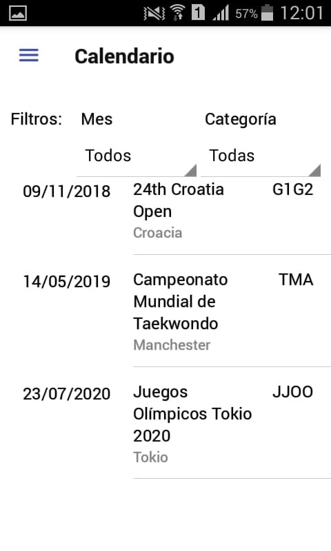
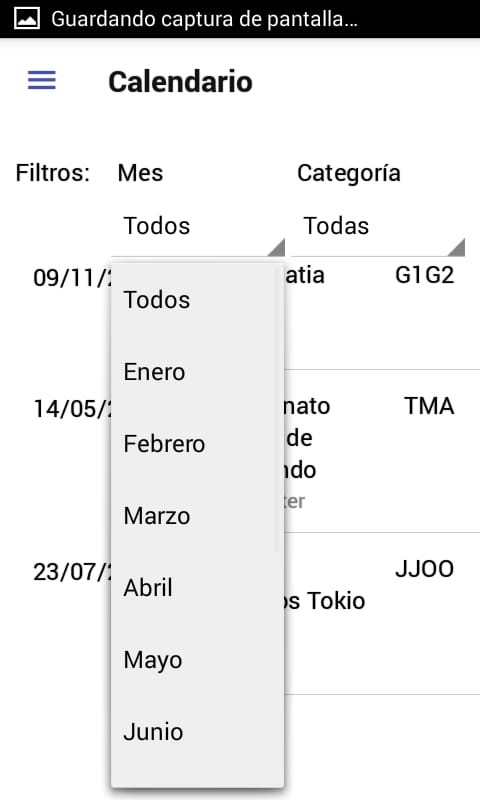
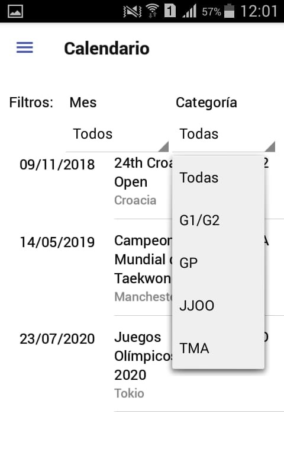

En esta pantalla podemos ver las distintas competencias de la WTF, desde la más cercana hasta la más lejana en tiempo.
Clickeando en el filtro de “Mes”, dónde está escrito “Todos”, podemos filtrar las competencias correspondientes al mes que seleccionemos.
Luego, podemos hacer lo mismo con las distintas categorías de campeonatos que hay en el taekwondo WTF, presionando también en “Todas”.
